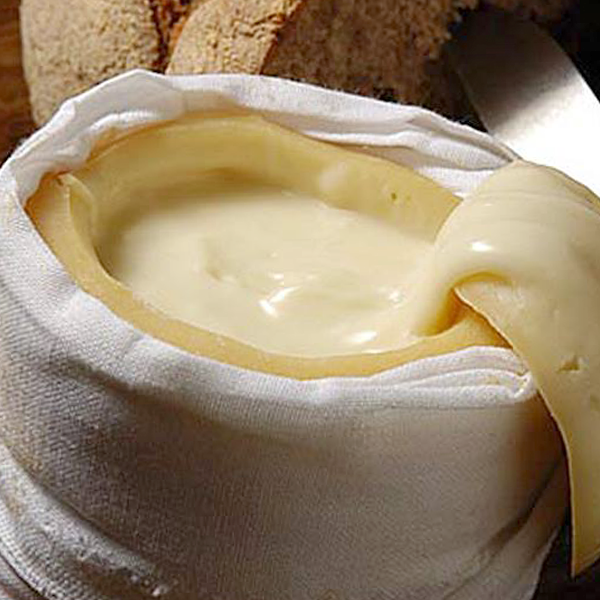
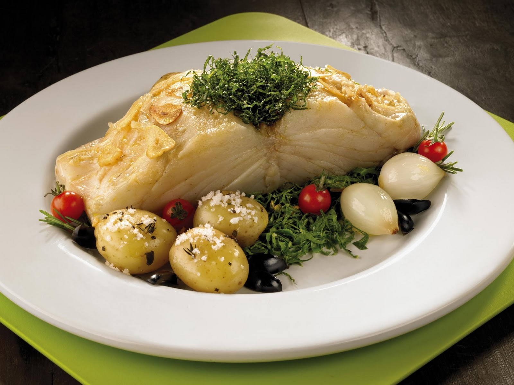
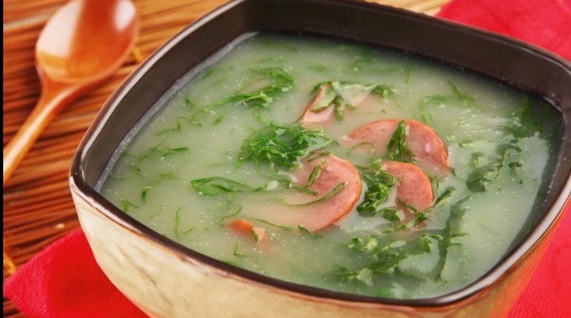

The five things you must try on a trip to Lisbon, Portugal—from creamy tarts in the morning to a piping bowl of caldo verde in a fado club at night.
The five things you must try on a trip to Lisbon, Portugal—from creamy tarts and coffee in the morning to a piping bowl of caldo verde in a fado club at night.
Pasteis de Belem:
Pasteis de nata, a kind of custard tart, are as pervasive in Lisbon as bagels are in Manhattan. The only place to go for the original, though, is the Antiga Confeitaria de Belem, a tile-decorated bakery on the western edge of the city, where they are known as Pasteis de Belem. Often dusted with cinnamon and powdered sugar, Pastéis de Belém are made from a secret recipe the current establishment guards far more carefully than the church baker who sold it to them almost 200 years ago. Most people order them to go, often after waiting in lines that stretch out the door. But these soft-in-the-center sweets go best with coffee, and you'll want the time to nibble at them, still warm from the oven, in one of the bakery’s serving rooms.
Queijo da Serra:
Portugal is a country of outstanding cheeses, or queijos. The most famous, though, is creamy yellow queijo da serra, made from sheep’s milk and—the ingredient that sets it apart—thistle flower. Produced only in the region of the Estrela mountains, in the north-central part of the country, it is served in many of Lisbon’s finer restaurants. But to get closest to the source without leaving the city, visit Manteigaria Silva, a shop in the historic center whose owners produce their own each winter at their farm in the Serra da Estrela. Queijo da serra hardens as it ages but is perfection when it will drip off a knife.
Bacalhau
The Portuguese national dish, bacalhau, or salt cod, has its origins on the Grand Banks of the North Atlantic, where the Portuguese once played a major role in manning the fishing boats. A flavorful fish, to say the least, there are supposedly at least 365 ways to prepare it, including the 25 served up at the vault-ceilinged Casa do Bacalhau, said to be in the former stables of a duke’s palace in the eastern part of Lisbon. It’s difficult to find any Lisbon restaurant that doesn’t serve some form of it—the most popular is probably bacalhau a bras, a stir fry of cod, rice, scrambled eggs, and onions, garnished with black olives.
Carne de Porco Alentejana
Every country with a shoreline seems to have its version of surf and turf. In Portugal it is carne de porco Alentejana, pork cooked with clams that simmer in their juices and are served up with roasted potatoes. The dish—from the southern Alentejo province, known for its summertime heat—actually tastes far better than it sounds, especially when accompanied by an Alentejo red. In Lisbon, try it at Joao do Grao, a traditional restaurant leaning toward the local crowd in the Baixa, or downtown, area.

Caldo Verde
Rivaling bacalhau for status as a national dish, this green soup could almost be called soulful, as it is often served in Lisbon nightclubs where you’ll hear fado, a traditional form of musical expression heavily laden with longing and lament. The basics of the brothy mix are cabbage, onions, and thin-sliced potatoes, sometimes accompanied by chourico sausage. No need to feign crying over lost love to try it, as you’ll find it at the many restaurants in Lisbon that specialize in dishes from the Minho province of northern Portugal, where caldo verde originated. Or spoon into it at one of the fado clubs, such as Pateo de Alfama, where it will be part of the meal accompanying the show.
